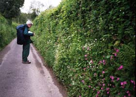
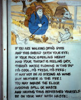
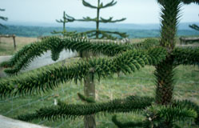

We crossed the Wye Bridge and then walked beside the river for a pleasant stretch. After that came more fields, and a muddy path through a dingle. A "dingle" is a deep, wooded valley or dell, usually quite pleasant. There were several miles of walking on small lanes, almost invariably bordered with banks of wildflowers. There was an annoying part, where we guessed that a farmer didn't like walkers. The assigned path was at the edge of the field, but there was a prickly hedge to our left and a single-wire "fence" to our right - and the path underfoot was tilted and rough! That field seemed endless. Then after we finally came to the road and crossed it, there was another difficult field. It must have been the same farmer! This field was plowed within a foot of the edge, and there were trees with low branches along the side of the field. Bad person! But to make up for that farmer, there was the one at Hill Farm who put up a sign beside a water tap, inviting Offa's Dyke walkers to help themselves:
There were two hill-climbs. The first was Disgwylfa Hill, pleasantly open with wide views. The second was the Hergest Ridge. On this one there was a wonderful long walk on top of the ridge, with great views, and soft comfortable grass underfoot. The skylarks were singing, and we felt great. Thann particularly liked the grove of newly-planted monkey-puzzle trees.
In Kington, we stayed with a young couple we liked, who lived on the outskirts of town. We went into town for dinner at The Swan, and had a pleasant walk back, through the town and then along a path beside Back Brook.
| Previous Day | Next Day | Home Page |